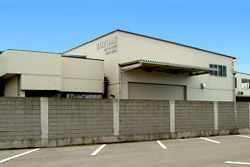
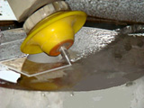
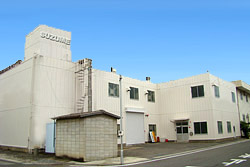
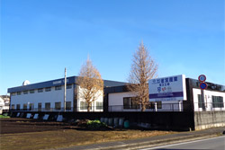

本社・第1工場
〒321-0135
栃木県宇都宮市五代1-2-4
- TEL
- 028-654-0843（代表）
- FAX
- 028-655-6826（優先受信）／028-601-8120
北宇都宮駐屯地 宇都宮航空学校 滑走路隣
切る・削る・接合する・設計する。工程ごとに別の会社を探さなくても、 一社で通せる範囲を広げてきました。
航空・宇宙関連部品、自動車部品、半導体関連部品、重電機関連部品ほか。 作図により材料歩留りを最善にして切断します。
航空・宇宙、自動車、半導体、重電機ほかの部品加工。
自動車・家電ほかの精密部品。
医科歯科の医療機器補助具を、ご要望に基づき設計製造します。 自社製品として「ディバインガイド」「クリアアナライザー」 「フロントガード」を製造販売しています。
医療用部品、一般産業用部品、試作品の製造を行います。
ウォータージェットは水と研磨材で切るので、熱が入りません。 焼けや変質を嫌う材料、刃物が負ける材料に向いています。

ウォータージェット6台、マシニング系29台、ろう付け12台。 切断・切削・接合・検査を社内で通せる構成です。
| 区分 | 設備 | 台数 |
|---|---|---|
| アブレイシヴ ウォータージェット機 |
超大型3軸加工機（国内最大最強級） | 1 |
| 大型5軸加工機（国内最強級） | 3 | |
| 大型3軸加工機 | 2 | |
| 門型マシニングセンター | 大型五面加工機 | 4 |
| 大型加工機 | 5 | |
| マシニングセンター | 立型・横型 | 20 |
| 旋盤機 | 立型 | 2 |
| 3Dプリンター | — | 1 |
| ろう付け機 | 自動ろう付け機 | 6 |
| 手動ろう付け機 | 6 | |
| 真空乾燥炉 | — | 2 |
| 真空装置 | — | 5 |
| 部品洗浄設備 | — | 一式 |
| 測定 | 3次元測定器（大型ワーク用を含む） | 2 |
| 超音波測定器 | 2 | |
| 他通常測定器 | 一式 | |
| CAD | CATIA V5 | 1 |

〒321-0135
栃木県宇都宮市五代1-2-4
北宇都宮駐屯地 宇都宮航空学校 滑走路隣

〒321-0202
栃木県下都賀郡壬生町おもちゃのまち工業団地4-10-19
北関東道 壬生インターより5分

〒321-0135
栃木県宇都宮市五代2-32-20
2018年新設
CFRP・チタン・SUS・インコネル・セラミックスなどの難削材のほか、 石英・ガラス・GFRP・金属・コンクリートなど、薄いものから厚いもの、 硬いものから軟らかいものまで形状切断できます。ウォータージェットは 熱を加えずに切るため、材料の性質を変えずに加工できます。
国内最大級のアブレイシヴウォータージェット機を保有しており、超大型材料の 形状切断に対応しています。超大型3軸加工機1台、大型5軸加工機3台、 大型3軸加工機2台の構成です。小物から大物まで、少ロットから多ロットまで お受けします。
はい。マシニングセンターによる精密切削加工（門型五面加工機4台、 大型加工機5台、立型・横型20台）、精密部品の銀ろう付け及び組立、 医療用補助具の設計・製作・販売まで手がけています。 切断から組立まで一社で完結できます。
対応しています。試作品・試験品・デザイン品のほか、破壊品の部分切断も 承ります。作図により材料歩留りを最善にして切断します。
JIS Q 9100:2016（航空宇宙品質マネジメントシステム）および JIS Q 9001:2015（ISO 9001:2015）の認証を2010年に取得しています。 認証機関はBSK（防衛基盤整備協会）、登録範囲は航空機部品及び 一般産業用金属部品の機械加工です。
材料と形状がわかるものをお送りいただければ、切れるかどうかお答えします。 図面がなくてもご相談ください。